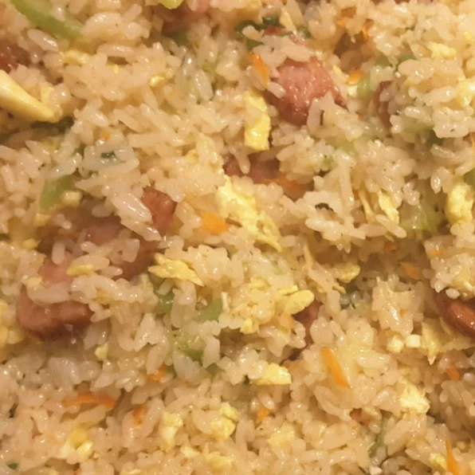

Heat 2 tablespoons of oil in a large nonstick skillet over medium heat, and stir in the rice. Toss the rice with the hot oil until heated through and beginning to brown, about 2 minutes. Add the garlic powder, toss the rice for 1 more minute to develop the garlic taste, and stir in the luncheon meat, sausage, scrambled eggs, pineapple, and oyster sauce. Cook and stir until the oyster sauce coats the rice and other ingredients, 2 to 3 minutes, stir in the green onions, and serve.